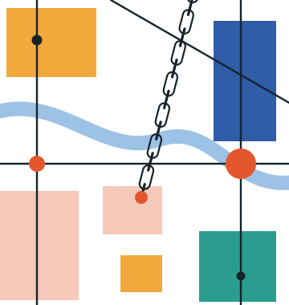

Oliver Harman
I study how power and connection shape economic development: how power is distributed within developing countries, and how places connect to the global economy.

I am Research Officer in Economic Geography and Spatial Economics at LSE’s Department of Geography and Environment and Global School of Sustainability. Alongside this role, I am Lecturer in Urban Economics at the African School of Economics’ Africa Urban Lab in Zanzibar, where I have taught since 2024. I am also a DPhil candidate in Sustainable Urban Development at the University of Oxford, where I am a Doctoral Affiliate of the Centre for the Study of African Economies and a Research Affiliate of the Blavatnik School of Government.
Fields: urban and regional economics; political economy of development; global value chains and foreign direct investment. Regions: sub-Saharan Africa and South Asia.
Featured paper
Status without Power: The Political Economy of Administrative Unit Creation in Uganda
On 1 July 2020 Uganda’s ten new cities commenced together, a reform that changed their status and resources without decentralising formal authority. This paper asks which dimensions of local power that change actually moves, comparing the ten against cities that were declared but never commenced.
More on my research Draft available on request
Recently published
- Unequal Progress and Barriers for Women in Economics. With O. Berland and N. Moreau-Kastler. Reviews of Economic Literature, 2026
In press
- Green Global Value Chains for Sustainable Regional Development. With R. Crescenzi. Cambridge Elements, Cambridge University Press
Work in progress
- Measuring Metropolitan Authority in Africa: A Regional Authority Index for Five Countries, 1994–2024. With J. Hayward and G. Sampó
- Green Foreign Direct Investment in Africa. With J. Alvarez-Vilanova, R. Crescenzi and C. Lippitsch
- Transforming SME Integration into Global Value Chains. With R. Shukla
- Degree of Urbanisation in Ethiopia. With S. Franklin, G. Kakoulaki, K. Molla and M. Read
On power, my thesis, Power and Place, asks how power is distributed within African states and what follows for local economic development. I treat the power of urban governments as three things that need not move together: capacity, how well they perform in the eyes of their citizens; authority, what the law formally grants them; and means, the fiscal resources behind both. I measure each, drawing on two decades of Afrobarometer surveys, a model-assisted coding of metropolitan legislation since the early 1990s, and IMF fiscal data, and then trace what they do for local public goods and for Uganda’s new cities, where status and resources changed but formal authority did not. On connection, I ask how foreign investment and global value chains land in particular regions, and whether those regions capture anything durable from them as the economy turns green.
I came to research from a decade in policy. I worked with mayors, city governments and national ministries across Africa, Asia and the Caribbean: as Cities Economist and then Senior Policy Economist on the International Growth Centre’s Cities that Work initiative, and before that as an ODI Fellow embedded in Guyana’s Ministry of Communities. I was focal point for city programmes with UN-Habitat, the European Commission and the UK’s FCDO, and my policy research has 61 externally validated instances of uptake by decision-makers across 27 countries.
I teach urban economics at LSE and the Africa Urban Lab, and co-convened the BREAD-IGC virtual PhD course in urban economics with Edward Glaeser. In 2026 I received the Class Teacher Award in LSE’s Department of Geography and Environment.
This site collects my research, teaching, policy research and commentary.
My best email is o.harman@lse.ac.uk, and I am on Google Scholar and LinkedIn. If you are ever in London or Oxford, I am nearly always available for a cup of tea.
Updates
- Jul 2026 “Unequal Progress and Barriers for Women in Economics”, with Ondine Berland and Ninon Moreau-Kastler, published in Reviews of Economic Literature (open access).
- Jun 2026 “Made in Britain, or designed in Britain? What Port Talbot teaches us about the green economy”, with Riccardo Crescenzi, in LSE Business Review.
- May 2026 “Unequal Progress and Barriers for Women in Economics”, with Ondine Berland and Ninon Moreau-Kastler, is in press at Reviews of Economic Literature.
- Apr 2026 Four working papers submitted to the International Growth Centre.
- Mar 2026 Green Global Value Chains for Sustainable Regional Development, with Riccardo Crescenzi, accepted for Cambridge Elements (Cambridge University Press).
- Mar 2026 Presented a paper on public goods in Africa at the CSAE Conference, Oxford.
- Jan 2026 Joint work presented at ASSA.